이 과정에서 하는 일
교육을 준비하면서 가장 많이 들은 말은 “써 보긴 했는데 업무에 어떻게 붙여야 할지 모르겠다”였습니다. 그래서 이 교재는 메뉴 설명을 줄이고, 수주 엑셀과 AS 이력, 매뉴얼과 회의 메모처럼 실제 업무와 닮은 자료로 처음부터 끝까지 해 보는 과제를 중심에 두었습니다. 과제마다 결과물이 하나씩 남고, 5장의 실전 노하우 KIT는 따로 인쇄해 책상 옆에 두고 쓰도록 만들었습니다.
화면의 메뉴 이름은 업데이트에 따라 조금씩 바뀝니다. 교재와 화면이 다르면 강사에게 알려 주세요. 다음 판에 반영하겠습니다.
메가존클라우드 AX 교육팀
| 구분 | 모듈 | 핵심 내용 | 방식 | 남는 결과물 | 권장 |
|---|---|---|---|---|---|
| PART 1 | 01 업무 자동화·효율화 사례 | 업계 AX 동향, 제조·B2B 타사 사례 14건, 시행착오 | 강의·활동 | 팀별 AI 적용 후보 3개 | 60분 |
| PART 1 | 02 사내 우수 활용 사례 | 현대엘리베이터 자체 발표 | 사례 발표 | - | 별도 |
| PART 1 | 03 Gemini Enterprise 시작하기 | 화면, 모델 선택, 파일 분석, 사내 검색, Deep Research, 모바일, 보안 수칙 | 강의·실습 | 기본기 체크 5개 통과 | 50분 |
| PART 2 | 04 Gemini 실전 활용 | 엑셀 해석, 교차 분석, 단계별 보고서, 자기 검증 | 실전 과제 | 임원 보고 1페이지 | 60분 |
| PART 2 | 05 실전 노하우 KIT | 5요소 점검, 고급 기법, 업무 스킬, 대화법, 직무별 템플릿, 업무 선별 | 강의·실습 | 내 업무 스킬 1개 | 60분 |
| PART 2 | 06 NotebookLM 활용 | 출처 확인 질의, 매뉴얼·규정 지식베이스, FAQ | 실전 과제 | 부서 지식 노트북 | 50분 |
| PART 2 | 07 에이전트 활용 심화 | 구조 이해, 지시문 설계, 조회부터 보고 메일까지 | 실전 과제 | 에이전트 + 설계서 | 60분 |
| PART 2 | 08 워크플로우 활용 심화 | As-Is 분해, 입출력 명세, 예외 처리, 효과 측정 | 실전 과제 | 자동화 설계서 + 워크플로 | 70분 |
| PART 2 | 09 Antigravity 활용 | 데이터 활용 4가지, Databricks 시연, 배포 | 시연·실습 | 데이터 대시보드 페이지 | 70분 |
03 모듈은 고객 초안에 없던 자리로, 04 실전 과제 전에 기본기를 맞추는 모듈로 메가존클라우드가 제안했습니다. 교육 시간과 회차는 협의 중이며 위 시간은 권장 시간입니다.
준비물과 실습 데이터팩
- Gemini Enterprise 계정 (웹 앱 주소는 사내 관리자 안내)
- 실습 데이터팩: 아래 버튼으로 내려받아 압축을 풉니다. 모든 데이터는 교육용 가상 자료입니다.
- 09장 실습자: Antigravity 앱 설치와 관리자의 AI 개발자 도구 사용 설정 (사전 안내 메일 참고)
| 파일 | 내용 | 쓰는 모듈 |
|---|---|---|
| 01_수주현황_2026Q3.xlsx | 3분기 수주·입찰 172건, 지역별 분기 목표 | 04 |
| 02_AS접수이력_2026Q3.xlsx / .csv | 3분기 고장 접수 243건 (현장, 모델, 고장코드, 도착 시간, 재발) | 03, 04, 07, 08 |
| 03_RFP요약_해솔타워_리모델링.pdf | 고객 리모델링 제안요청서 요약 | 04 |
| 04_리모델링_표준계약서_핵심조항.docx | 당사 표준계약 핵심 조항 | 04 |
| 05_승강기_유지관리_매뉴얼.pdf | 점검 주기, 고장코드표, 갇힘 대응, 재발 관리 | 06, 07 |
| 06_현장_안전작업_지침.pdf | LOTO, 2인 1조, 피트·카 상부 작업 | 06 |
| 07_출장_경비_규정.pdf | 국내·해외 출장, 야간·휴일 출동 수당 | 03, 06 |
| 08_서비스센터_문의모음_원본.xlsx | 정리 안 된 고객·직원 문의 25건 | 06 |
| 09_영업2팀_주간회의메모_1020.docx | 정리 안 된 회의 메모 | 04, 05 |
| 10_Antigravity_실습/ | 생산·출하 CSV, 일일 AS 현황 CSV, 에이전트 결과 CSV | 09 |
| KIT/ | 실전 노하우 KIT (PDF·DOCX), 프롬프트 라이브러리(XLSX), 업무 선별 체크리스트(XLSX) | 05 |
| 템플릿/ | 활동지, 에이전트 설계서, 업무 자동화 설계서 | 01, 07, 08 |
모든 실습에 공통으로 지킬 것
- 실습에는 데이터팩만 씁니다. 실제 고객 정보, 개인정보, 계약 원문은 넣지 않습니다.
- AI 결과는 초안입니다. 숫자와 근거는 원본과 대조한 뒤 씁니다.
- 메일 발송이 들어간 실습은 받는 사람을 본인으로만 지정합니다.
- 캔버스, 음성 입력, 스킬, 모델 선택 같은 기능은 관리자가 켜야 화면에 보입니다. 교재와 화면이 다르면 강사에게 알려 주세요.
업무 자동화·효율화 사례
- 제조·B2B 기업이 Gemini Enterprise를 어떤 업무에 쓰고 어떤 성과를 냈는지 설명할 수 있습니다.
- 먼저 도입한 회사들이 겪은 시행착오와 대응을 알고, 같은 실수를 피할 수 있습니다.
- 우리 팀에서 먼저 해 볼 업무 3개를 고릅니다.
1.1업계 AX 동향
2024~2025년이 직원 개인이 채팅으로 “써 보는” 시기였다면, 2026년은 부서가 에이전트와 워크플로로 반복 업무를 맡기는 시기로 넘어가고 있습니다. 동시에, 도구만 깔고 업무 흐름을 바꾸지 않은 곳은 성과를 내지 못한다는 조사도 쌓이고 있습니다.
| 흐름 | 내용 | 출처 |
|---|---|---|
| 제조 현장의 에이전트 | GE Appliances는 에이전트 800개 이상, Tata Steel은 9개월 만에 300개 이상을 배포했습니다. 현업이 로우코드 도구로 직접 만든 에이전트가 많습니다. | Google Cloud 보도자료 (2026-04-22) |
| 국내 대기업 도입 | 삼성전자 DX부문이 전용 테넌트로 Gemini Enterprise를 도입해 사내 데이터 검색에서 시작, 단계적으로 에이전트로 넓힙니다. | 파이낸셜뉴스·바이라인네트워크 (2026-07-13) |
| 성과의 격차 | 생성형 AI 파일럿의 약 95%가 손익에 측정 가능한 효과를 내지 못했습니다. 원인은 모델보다 업무 흐름에 녹이지 못한 데 있었습니다. | MIT NANDA 보고서 (2025-08) |
| 에이전트 과열 경계 | 에이전트 프로젝트의 40% 이상이 2027년 말까지 취소될 전망입니다. 원인은 비용 증가, 불분명한 가치, 부족한 위험 통제입니다. | Gartner (2025-06-25) |
| 가장 큰 장벽은 사람 | AI 통합의 최대 장벽으로 “직원 역량 부족”이 꼽혔습니다. 매출 증대를 기대한 기업은 74%, 실제 달성은 20%입니다. | Deloitte State of AI in the Enterprise 2026 |
1.2타사 Use Case: 제조·B2B 14건
공개된 자료만 모았습니다. 성과 수치는 해당 기업이나 Google이 발표한 값이며 제3자 검증은 없습니다. 시행착오가 출처에 적혀 있지 않으면 “출처에 언급 없음”으로 두었습니다. 마지막 두 건은 Gemini 사례가 아니라 승강기 업계 경쟁사의 AI 방향을 참고로 넣었습니다.
현대엘리베이터와 같은 승강기 제조사의 Gemini Enterprise 공개 사례는 2026년 10월 현재 찾지 못했습니다. Otis, Schindler, Mitsubishi Electric도 직원용 생성형 AI 도구를 공개하지 않았습니다.
1.3시행착오에서 배울 점
위 사례를 가로질러 보면 같은 장면이 반복됩니다.
| 흔한 실수 | 무슨 일이 생기나 | 먼저 한 회사의 대응 |
|---|---|---|
| 라이선스만 나눠 주고 쓸 일은 각자 찾게 함 | 첫 주에 몇 번 써 보고 사용이 멈춤 | Kärcher·BBVA: 기초 교육을 이수해야 라이선스를 줌. Kärcher: 앰배서더(챔피언)와 경영진이 처음부터 참여 |
| 문서 저장소를 정리하지 않고 연결 | 오래된 문서·중복 문서가 답에 섞임 | KPMG: 커넥터가 올바른 권한으로 올바른 데이터를 주는지 사전 시험에 크게 투자. Beyond: 오래된 문서를 표시·정비 |
| 처음부터 에이전트부터 만듦 | 만드는 데 시간이 들고 관리할 것만 늘어남 | KPMG·삼성전자·Mars: 사내 검색·지식부터 시작한 뒤 에이전트로 확장 |
| 도구를 너무 많이 깜 | 무엇을 써야 할지 몰라 아무것도 안 씀 | KPMG: “쓸 수 있는 것보다 많은 AI를 깔지 말라”(AI sprawl 경고). Mars: 하나의 AI 운영체제로 통합 |
| 완벽한 답을 기대함 | 한두 번 틀리면 실망하고 그만둠 | Beyond: “완벽보다 진전” 마인드로 대응 |
| 사람 확인 없이 자동화 | 틀린 결과가 그대로 고객·시스템에 나감 | Valeo: 모든 에이전트 프로세스에 사람의 감독을 원칙으로 둠 |
| 사용률만 측정 | 접속은 많은데 업무가 바뀌었는지 모름 | BBVA: 직원별 주당 절감 시간을 측정. Gartner: 가치가 분명한 곳에만 적용하고 업무를 재설계 |
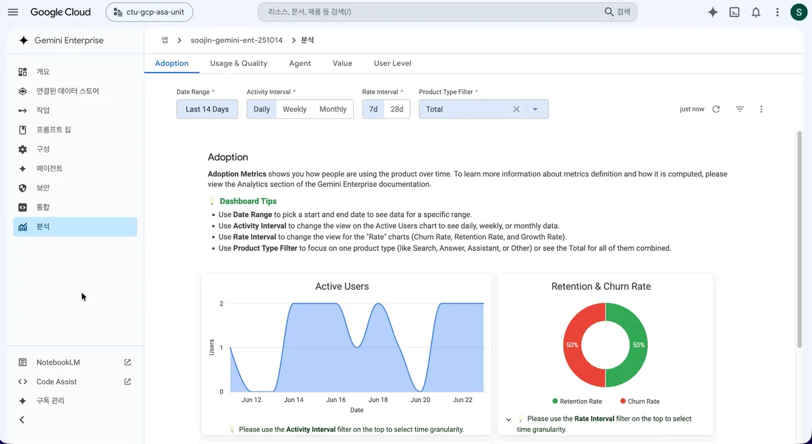
1.4활동: 우리 팀 AI 적용 후보 3개 찾기
- 반복 업무 적기 (5분): 각자 매주·매달 반복하는 일을 2개씩 적습니다. 주기, 1회 걸리는 시간, 쓰는 자료를 함께 적습니다.
- 점수 매기기 (7분): 업무마다 네 가지 기준에 1~3점을 줍니다.
- 반복성: 자주, 같은 방식으로 하는가
- 문서·데이터 중심: 문서나 엑셀을 읽고 쓰는 일인가
- 규칙이 분명: 잘했는지 판단 기준이 있는가
- 되돌릴 수 있음: 틀려도 사람이 바로 고칠 수 있는가
- 후보 3개 확정 (5분): 점수가 높은 3개를 입력(자료) → 처리(AI가 할 일) → 출력(결과물)으로 한 줄씩 적습니다.
- 공유 (3분): 팀별로 1순위 후보를 발표합니다. 강사가 03장 기능 선택표로 어떤 기능이 맞는지 짚어 줍니다.
예시: 서비스지원팀이 고른 후보
| 순위 | 업무 | 입력 | 처리 | 출력 | 쓸 기능 |
|---|---|---|---|---|---|
| 1 | 주간 재발 현장 보고 | AS 접수 엑셀 | 재발 현장 추리기, 원인 요약 | 팀장 보고 메일 | 워크플로 (08장) |
| 2 | 신입 기사 문의 응대 | 매뉴얼, 안전지침 | 근거를 찾아 답하기 | 출처가 달린 답변 | 노트북 (06장) |
| 3 | 점검 보고서 정리 | 현장 메모 | 양식에 맞춰 정리 | 점검 보고서 초안 | 스킬 (05장) |
사내 우수 활용 사례
Gemini Enterprise 시작하기
- 새 채팅, 모델 선택, 파일 올리기, 사내 문서 검색, Deep Research, Canvas를 쓸 수 있습니다.
- 모바일 앱과 음성 입력을 알고, 대화 공유의 주의점을 압니다.
- 넣어도 되는 정보와 안 되는 정보를 구분합니다.
3.1화면과 모델 선택
웹 앱에 들어가면 가운데 입력창이 있고 왼쪽에 메뉴가 있습니다. 입력창의 안내 문구처럼 무엇이든 묻고, 사내 데이터를 검색하고, @로 에이전트를 부르고, /로 도구와 스킬을 쓰는 곳입니다.
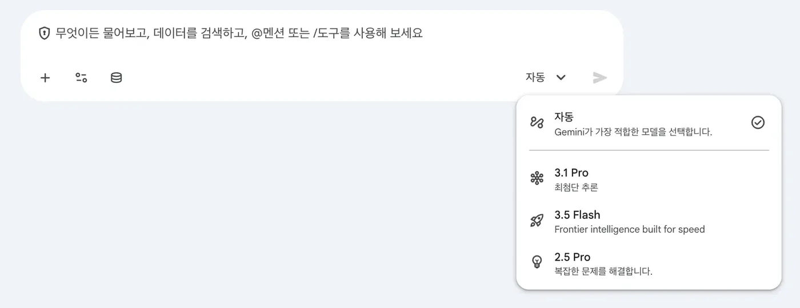
| 왼쪽 메뉴 | 하는 일 | 이 과정에서 |
|---|---|---|
| 새 채팅 · Chats | 대화 시작, 지난 대화 열기·이름 변경·즐겨찾기 | 03~05장 |
| Agents (에이전트 갤러리) | Google이 만든 에이전트(Made by Google)와 사내·내 에이전트 | 06장 노트북, 07장 |
| + New agent | Workflow Builder로 채팅 에이전트·워크플로 만들기 | 07~08장 |
| Skills | 반복 지시를 저장해 두고 이름으로 부르기 | 05장 TIP 3 |
| Deep Research | 여러 출처를 찾아 읽고 인용이 달린 보고서 작성 | 03장 |
| Library | 만든 이미지·영상 모아 보기 | - |
모델은 세 갈래로 기억합니다
| 선택 | 언제 | 예 |
|---|---|---|
| 자동 (기본값) | 잘 모르겠으면 그대로 둡니다. 질문 난이도에 맞춰 Gemini가 고릅니다. | 대부분의 질문 |
| Flash 계열 | 빠른 답이 필요한 짧은 일 | 메일 다듬기, 번역, 요약 |
| Pro 계열 | 여러 문서를 엮는 분석, 복잡한 추론. 답이 조금 느립니다. | 04장 교차 분석, 계약 비교 |
모델 이름과 버전은 자주 바뀝니다(2026년 10월 기준 Gemini 3.8 Flash가 기본, Gemini 4 Argon은 10월 27일부터 기본 제공 예정). 모델 선택 메뉴는 관리자가 켜야 보이며, 안 보이면 자동으로 진행합니다.
3.2파일 올리기와 사내 문서 검색
입력창의 +를 눌러 파일을 올리거나 OneDrive·Drive 파일을 붙입니다.
| 형식 | 최대 크기 | 형식 | 최대 크기 |
|---|---|---|---|
| PDF, PPTX | 100MB | CSV, TXT | 7MB |
| XLSX (압축 해제 기준) | 50MB | DOCX | 3MB |
| 이미지 (PNG, JPEG) | 30MB | MP4, MP3 | 200MB |
올린 파일, 지식 파일, 대화 기록을 합쳐 한 대화에 약 80만 토큰까지 담깁니다. 넘으면 “Input too long” 오류가 나므로 새 채팅을 엽니다. DOCX 한도가 3MB로 작으니, 큰 문서는 PDF로 바꿔 올립니다.
사내 문서 검색과 출처 보기
- 입력창의 데이터 소스 아이콘(Connectors)에서 찾을 곳만 켭니다. 예: SharePoint만 켜고 나머지와 Google 검색은 끕니다.
- 질문에 파일명이나 문서 종류를 넣으면 정확도가 올라갑니다. 예: “출장 경비 규정에서…”
- 답 끝의 Sources를 누르면 근거 문서 목록이 보이고, 마우스를 올리면 근거 문장이 강조됩니다. 본문 중간의 인용 칩도 같은 역할입니다.
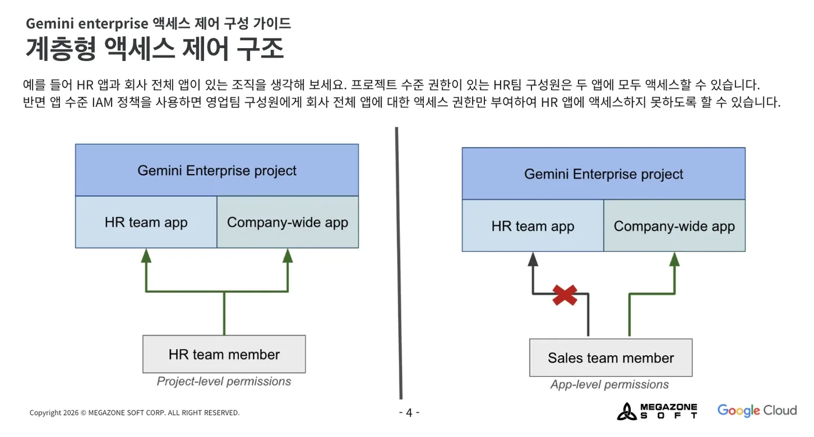
3.3Deep Research, Canvas, 이미지
Deep Research
- 왼쪽 메뉴 Deep Research
- Sources에서 출처 고르기 (사내 문서, Google 검색 추가 가능)
- 질문 입력 → 제시된 연구 계획을 읽고 고치기
- Start Research
몇 분 뒤 인용이 달린 보고서와 1~2분 길이 오디오 요약이 나옵니다. Standard는 하루 3회라 질문을 다듬은 뒤 실행합니다.
Canvas (문서·슬라이드 편집기)
- 도구 메뉴의 Canvas를 고르거나 “문서로 만들어 줘”라고 요청
- 오른쪽 편집기에서 직접 고치거나, 문장을 골라 Gemini에게 다시 쓰게 함
- 내보내기: 문서는 Google Docs·DOCX·PDF, 슬라이드는 Google Slides·PowerPoint·PDF
Canvas는 모바일에서 열리지 않고, 대화를 공유받은 사람도 열 수 없으니 내보낸 파일로 전달합니다.
도구 메뉴의 Generate an image, Generate a video로 교육용 그림이나 짧은 영상을 만들 수 있습니다. Standard 한도는 하루 이미지 5장, 영상 2개입니다.
3.4모바일 앱과 음성
- 모바일 앱(Google Gemini Enterprise, iOS·Android, 2026-06 정식 출시): 웹 앱에 나오는 QR 코드나 관리자가 준 링크로 연결합니다. 카메라로 찍은 사진을 바로 질문할 수 있고, 음성으로 묻고 답을 소리로 들을 수 있습니다. 에이전트도 실행됩니다.
- 웹 음성 입력(2026-09 정식 출시): 입력창의 마이크 → 말하기 → 정지 → 받아쓴 글을 고친 뒤 보내기. 녹음은 저장되지 않습니다.
- 메일 발송처럼 밖으로 나가는 동작은 모바일에서도 사용자가 확인해야 실행됩니다.
3.5보안 수칙과 하루 한도
회사 계정으로 쓰는 Gemini Enterprise에 넣은 질문과 결과는 Google 모델이나 다른 고객의 모델 학습에 쓰이지 않습니다(공식 FAQ). 그래도 아래 수칙은 지킵니다. 관리자는 민감 문구 차단, 채팅 보관 기간 같은 설정으로 한 번 더 막습니다.
해도 됩니다
- 업무 문서, 사내 규정, 공개된 자료 분석
- 회의 메모에서 개인 평가를 지운 뒤 정리
- 고객사 이름을 “A사”로 바꾼 뒤 제안서 초안
- 결과를 원본과 대조한 뒤 보고
하지 않습니다
- 주민등록번호, 건강 정보, 계좌·카드 번호, 비밀번호 입력
- 개인 Gmail 등 회사 밖 AI 서비스에 회사 자료 넣기
- 민감 정보가 든 대화를 링크로 공유 (공유 시점 내용이 그대로 보임)
- AI 답을 확인 없이 고객에게 그대로 발송
대화 공유는 공유 아이콘 > Create link로 하며, 공유 시점의 내용만 보입니다. 설정 > Shared chats에서 언제든 공유를 취소할 수 있습니다.
Standard 하루 한도 (사용자당, 회사 전체가 풀로 나눠 씀)
| 항목 | 하루 | 항목 | 하루 |
|---|---|---|---|
| 질문 | 160회 | Deep Research | 3회 |
| 에이전트 새로 만들기 | 1개 | 이미지 생성 | 5장 |
| 영상 생성 | 2개 | 노트북 질문 | 500회 |
한도는 매일 자정(미국 태평양 시간, 한국 오후 4~5시)에 초기화됩니다. 2026년 8월부터 회사 전체 풀 방식과 초과 사용 과금 통제가 도입되어 계약에 따라 다를 수 있습니다. 한도를 넘으면 “Usage limit reached”가 뜨고 그 기능만 막힙니다.
관리자 참고: 기능이 화면에 안 보일 때
모델 선택, 에이전트 디자이너(Workflow Builder), Deep Research, NotebookLM, 세션 공유 같은 기능은 관리자 콘솔의 구성 → 기능 관리에서 켭니다.
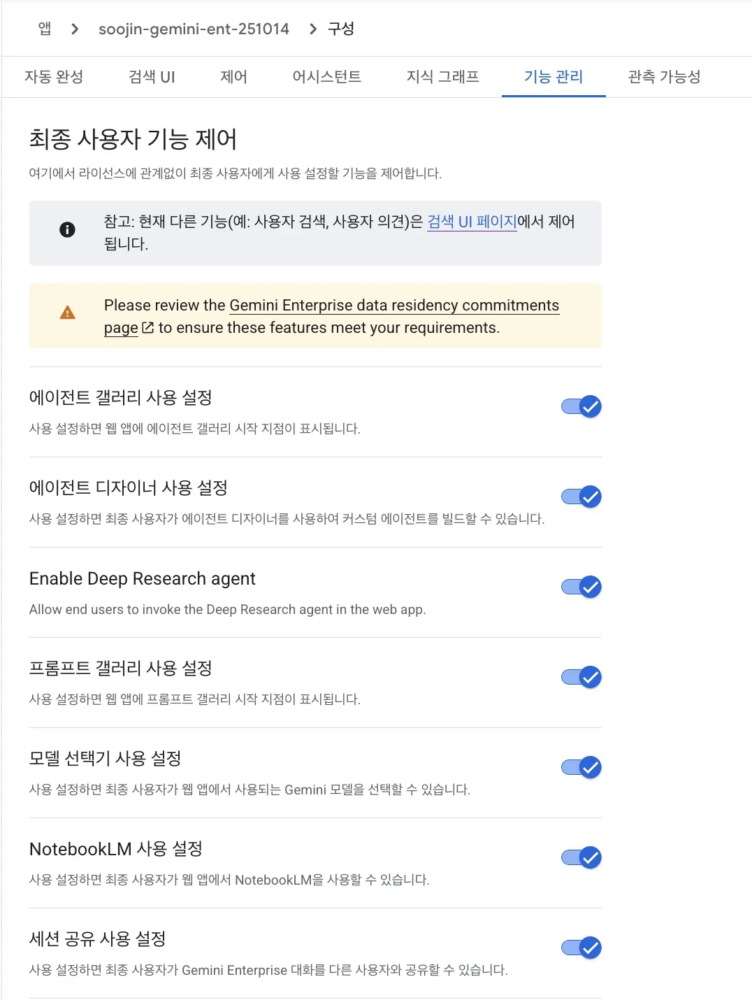
3.6실습: 기본기 체크 5개
| # | 할 일 | 통과 기준 |
|---|---|---|
| 1 | 새 채팅에서 02_AS접수이력_2026Q3.csv를 올리고 아래 프롬프트 3-1 실행 | 지역별 접수 건수 표가 나오고 합계가 243 |
| 2 | 같은 대화에서 모델을 Pro로 바꿔 프롬프트 3-2 실행 | 계산 기준(필터 조건)이 함께 적힘 |
| 3 | 07_출장_경비_규정.pdf를 올리고 프롬프트 3-3 실행, 근거 조항 확인 | 휴일 수당 5만 원만 적용, 제4조 인용 |
| 4 | Canvas로 3번 답을 사내 공지문 형태로 만들고 DOCX로 내보내기 | DOCX 파일이 내려받아짐 |
| 5 | 모바일 앱 연결 후 음성으로 “방금 대화 세 줄로 요약해 줘” | (시간 되면) 모바일에서 대화가 이어짐 |
첨부한 AS 접수 이력에서 지역별 접수 건수를 표로 보여 줘. 마지막 줄에 합계를 넣어 줘.
지역별 평균 도착소요(분)을 계산하고, 승객 갇힘(E90) 건 중 30분을 넘긴 건을 목록으로 보여 줘. 어떤 열을 어떤 조건으로 걸렀는지 계산 기준을 한 줄로 먼저 적어 줘.
첨부한 출장 경비 규정만 근거로 답해 줘. 토요일 밤 11시에 승객 갇힘 출동을 나가면 출동 수당은 얼마야? 근거 조항 번호도 알려 줘.
강사 메모 · 참고 답
- 지역별 접수: 수도권·영남·충청·호남·강원, 합계 243건 (해외 지역은 AS 데이터에 없음)
- 평균 도착: 강원 약 92분으로 가장 김, 수도권 약 27분. 갇힘 7건 중 30분 초과 5건 (춘천 A동 120분, 강릉 교동 A동 88분, 전주 에코 레지던스 52분, 대구 수성 오피스 47분, 대전 둔산 센트럴 36분)
- 출동 수당: 야간(3만)과 휴일(5만)이 겹치면 휴일 수당 5만 원만 (제4조). 08 문의 원본의 “8만 원” 메모는 틀린 답
3.7어떤 기능을 쓸까
01장 활동에서 고른 후보 업무를 아래 표에 대 보면 쓸 기능이 정해집니다. 위에서 아래로 갈수록 만드는 노력이 크므로, 위에서 해결되면 거기서 멈춥니다.
| 이런 일이면 | 쓸 기능 | 장 |
|---|---|---|
| 한 번 묻고 끝나는 분석·작성 | 채팅 (+ 파일, Canvas) | 04 |
| 같은 지시를 매주 다시 씀 | 스킬 | 05 |
| 같은 문서 묶음에 계속 묻고, 출처가 중요 | 노트북 (Gemini Notebook) | 06 |
| 여러 사람이 같은 기준으로 묻고 답을 받음 | 채팅 에이전트 | 07 |
| 정해진 시간이나 사건에 자동으로 단계 실행 | 워크플로 | 08 |
| 데이터로 화면(대시보드·도구)을 만들고 배포 | Antigravity | 09 |
| 사내 시스템 연동, 대량 처리, 정확도 보장이 필요 | 개발 과제로 넘김 (과정 2) | - |
Gemini 실전 활용
- 엑셀 두 개를 올려 구조와 데이터 문제부터 확인합니다.
- 두 파일을 엮어 하나의 결론을 냅니다 (교차 분석).
- 한 번에 쓰지 않고 단계를 나눠 보고서를 만듭니다.
- AI가 쓴 숫자를 AI에게 다시 검증시키고, 마지막은 사람이 확인합니다.
- 새 채팅을 열고 모델은 Pro 계열을 고릅니다 (안 보이면 자동).
- +로
01_수주현황_2026Q3.xlsx와02_AS접수이력_2026Q3.xlsx를 올립니다.
바로 결론을 묻지 않고 데이터 생김새부터 확인합니다. 열의 뜻을 잘못 이해하면 뒤의 분석이 모두 틀어집니다.
당신은 제조업 영업·서비스 데이터를 분석하는 데이터 분석가입니다. 첨부한 두 엑셀 파일(수주현황, AS접수이력)을 분석하기 전에 데이터 구조부터 확인하려고 합니다. 1. 파일별로 시트 이름, 행 수, 열 이름과 각 열의 뜻을 표로 정리해 주세요. 2. 두 파일을 연결할 수 있는 공통 기준(열)을 알려 주세요. 3. 분석 전에 확인할 데이터 문제(빈 값, 이상한 값, 단위)를 찾아 주세요. 아직 결론은 내지 말고 구조 확인까지만 해 주세요.
- ‘읽어보기’ 시트의 설명(금액 단위 백만원, 재발 정의)을 반영했다
- 두 파일의 공통 기준으로 지역을 찾았다 (해외 지역은 AS 데이터에 없다는 점까지)
- 실주인데 경쟁사가 ‘-’로 비어 있는 행을 데이터 문제로 짚었다
질문은 한 번에 하나씩 이어 갑니다. 답마다 계산 기준이 적혔는지 봅니다.
수주현황 파일로 아래를 계산해 주세요. - 지역별 3분기 목표 대비 달성률 (실적은 진행단계가 ‘수주확정’인 건만, 목표는 ‘분기목표’ 시트) - 전체 달성률 - 실주 건의 지역별 건수, 실주사유별 건수, 경쟁사별 건수 결과는 표로, 달성률이 낮은 순서로 정렬해 주세요. 계산 기준을 먼저 한 줄로 적어 주세요.
AS접수이력 파일로 아래를 계산해 주세요. - 30일내재발이 ‘Y’인 건수가 많은 현장 상위 5곳 (현장명, 지역, 모델, 설치연도, 접수 건수, 재발 건수) - 모델별 재발률 - 지역별 평균 도착소요(분)
두 분석을 엮어 영업 기회를 찾고 싶습니다. 재발이 많은 현장 중 설치 15년 이상이거나 단종 모델(HM-700)인 곳을 ‘리모델링 제안 후보’로 보고, - 후보 현장 목록 - 그 현장이 있는 지역의 3분기 수주 달성률 - 영업팀이 먼저 접촉할 순서와 이유 를 정리해 주세요. 근거 숫자를 함께 적어 주세요.
강사 메모 · 참고 답 (데이터팩 기준)
| 지역 | 목표 | 수주확정 | 달성률 |
|---|---|---|---|
| 영남 | 16,000 | 11,360 | 71.0% |
| 해외-중동 | 12,000 | 9,960 | 83.0% |
| 수도권 | 18,000 | 16,484 | 91.6% |
| 호남 | 10,500 | 11,025 | 105.0% |
| 강원 | 5,000 | 5,359 | 107.2% |
| 해외-베트남 | 7,000 | 7,663 | 109.5% |
| 충청 | 10,000 | 11,102 | 111.0% |
| 전체 | 78,500 | 72,953 | 92.9% |
- 실주 34건: 영남 16, 해외-중동 6, 수도권 5, 강원·충청·호남 각 2, 해외-베트남 1. 사유는 가격 차이 10, 사양 변경 대응 지연 10, 납기 9, 기존 거래 관계 5. 경쟁사는 C사 13, B사 11, A사 9, 미기록 1
- 재발 상위: 해솔타워(수도권, HM-700, 2008) 접수 26·재발 18 / 부산 마린시티 A동(영남, HM-700, 2009) 20·14 / 서현 메디컬센터(충청, HM-700, 2008) 14·9 / 원주 혁신 메디컬센터(강원, HM-700, 2010) 9·6 / 부산 해운대 오피스(영남, HM-700, 2007) 9·5
- 모델별 재발률: HM-700 66.7%, HM-900 15.4%, HM-500 7.9%, HM-300 1.6%
- 교차 결론 예: 부산 마린시티 A동과 해운대 오피스는 달성률이 가장 낮은 영남에 있어 1순위. 해솔타워는 이미 RFP가 나와 있음(03 파일)
“보고서 써 줘” 한 번보다 핵심 정리 → 원인 가설 → 한 장 보고서로 나누면 품질이 좋아집니다. 05장 TIP 2의 단계 체이닝입니다.
지금까지 분석한 내용에서 임원이 알아야 할 핵심 발견 5개를 골라 주세요. 각 발견은 한 문장으로, 근거 숫자를 괄호에 넣어 주세요.
‘영남 달성률 부진’과 ‘HM-700 현장 재발’에 대해 가능한 원인 가설을 각각 2개씩 제시하고, 가설을 확인하려면 어떤 추가 자료가 필요한지 적어 주세요. 데이터로 확인된 사실과 추정을 구분해 주세요.
Canvas로 임원 보고 1페이지 문서를 만들어 주세요. - 제목: 2026년 3분기 수주·서비스 현황과 리모델링 기회 - 구성: 요약(3줄) / 수주 현황 표 / 서비스 현황 표 / 리모델링 제안 후보 / 요청 사항 - 분량: A4 1장, 개조식, 숫자는 단위 표기 - 추정은 ‘(추정)’으로 표시
Canvas에서 문장을 직접 고치거나 골라서 다시 쓰게 한 뒤 DOCX로 내보냅니다.
AI가 쓴 보고서를 AI에게 검산시킵니다. 이번에는 09_영업2팀_주간회의메모_1020.docx도 함께 올립니다.
방금 만든 1페이지 보고서를 검토자 입장에서 검증해 주세요. 1. 보고서의 숫자를 원본 엑셀에서 다시 계산해 ‘보고서 값 / 재계산 값 / 일치 여부’ 표로 대조해 주세요. 2. 데이터로 뒷받침되지 않는 문장을 찾아 표시해 주세요. 3. 첨부한 회의 메모와 데이터가 서로 다른 부분이 있으면 알려 주세요. 4. 고친 내용을 반영한 최종본의 수정 사항만 목록으로 주세요.
회의 메모에는 “A사가 8~12% 싸게 들어옴, A사가 제일 공격적”이라고 적혀 있지만, 데이터에서 실주 경쟁사로 가장 많이 나온 곳은 C사(13건)이고 A사는 9건입니다. 사람이 쓴 메모도 데이터와 다를 수 있음을 확인하는 장치입니다.
- 모든 숫자가 재계산 값과 일치한다
- 추정에는 ‘(추정)’ 표시가 있다
- A4 한 장 안에 들어온다
- 요청 사항(누가, 무엇을, 언제까지)이 있다
첨부한 고객 RFP 요약(03)과 당사 표준계약서 핵심 조항(04)을 비교해 주세요. 조건별로 ‘RFP 요구 / 당사 표준 / 차이 / 위험도(상·중·하) / 협상 제안’ 표를 만들어 주세요. 공사 기간은 당사 표준(호기당 4주, 동시 2대)으로 6대를 하면 몇 주인지 계산해 RFP와 비교해 주세요. 법적 판단이 필요한 항목은 ‘법무 검토 필요’로 표시해 주세요.
강사 메모 · 참고 답
- 지체상금: RFP 0.3%/일·상한 없음 ↔ 표준 0.1%/일·상한 10% (위험 상, 법무 검토)
- 하자보증: 36개월·4시간 출동 ↔ 24개월·8시간
- 원격감시: 3년 무상 ↔ 유상(무상은 사업부장 승인)
- 유지보수 단가: 3년 고정 ↔ 매년 조정(고정은 원가 검토 후 승인)
- 대금: 기성 2회·준공 후 60일 ↔ 선급 30%·준공 후 30일
- 공기: 동시 2대 × 4주 × 3회차 = 12주 → RFP 10주 초과
- 작업 시간: 반입은 야간만 ↔ 야간 작업 인건비 30% 할증 별도
- 표준과 다른 조건은 계약심의위원회 사전 승인 필요
실전 노하우 KIT
- 프롬프트를 5요소로 점검하고 고칠 수 있습니다.
- 구분자, 예시, 단계 나누기, 평가 기준 같은 고급 기법을 상황에 맞게 씁니다.
- 반복 업무를 스킬로 저장해 한 줄로 실행합니다.
- AI에 맡길 일과 맡기면 안 되는 일을 체크리스트로 가립니다.
KIT 내려받기
이 장의 내용을 그대로 담은 파일입니다. PDF는 인쇄용, DOCX는 우리 부서에 맞게 고쳐 쓰는 용도, XLSX는 이 교재의 프롬프트 전체를 직무·상황별로 모은 라이브러리입니다.
프롬프트 5요소
Google의 공식 프롬프트 가이드는 역할(Persona), 작업(Task), 맥락(Context), 형식(Format) 네 가지를 기본으로 제시합니다. 여기에 실무에서 자주 빠지는 조건을 더해 다섯 가지로 점검합니다. 매번 다 넣을 필요는 없지만, 결과가 기대와 다르면 빠진 요소부터 채웁니다.
| 요소 | 묻는 것 | 예시 |
|---|---|---|
| ① 역할 | 누구로서 | “너는 해외영업 기획 담당자야” |
| ② 맥락 | 배경, 대상, 자료 | “첨부한 이번 분기 수주 자료를 바탕으로” |
| ③ 작업 | 무엇을 | “임원 보고용으로 요약해 줘” |
| ④ 형식 | 표, 개조식, 메일 | “표 1개 + 핵심 3줄로” |
| ⑤ 조건 | 분량, 말투, 주의 | “1페이지 이내, 부족한 정보는 먼저 질문해 줘” |
너는 해외영업 기획 담당자야. ← 역할 첨부한 이번 분기 수주 자료를 바탕으로, 본부장 보고용으로 ← 맥락 해외 지역 실적을 요약해 줘. ← 작업 표 1개 + 핵심 3줄로 정리하고, ← 형식 1페이지 이내로. 부족한 정보가 있으면 먼저 질문해 줘. ← 조건
Gemini Enterprise 프롬프트 가이드는 이 밖에 이름·날짜·프로젝트명처럼 구체적인 정보 넣기, “찾아 줘·요약해 줘·비교해 줘” 같은 행동 동사로 시작하기, 결과를 보고 반복해 다듬기를 권합니다.
TIP 1프롬프트 5요소 점검
보내기 전 체크 질문
- 역할: 이 일을 사람에게 맡긴다면 어느 부서의 누구에게 맡기겠는가
- 맥락: AI가 모르는 배경(목적, 읽을 사람, 사내 기준)을 적었는가, 자료를 첨부했는가
- 작업: 동사가 하나로 분명한가 (요약·비교·작성·검토 중 무엇)
- 형식: 결과를 어디에 붙여 넣을지 정했는가 (메일, 보고서 표, 엑셀)
- 조건: 분량, 말투, 하지 말 것, 모르면 어떻게 할지 적었는가
복사용 템플릿
너는 [역할]이야. [배경/목적]을 위해 [읽을 사람]이 볼 자료를 만들려고 해. 참고 자료는 첨부한 [파일명]이야. [작업: 요약/비교/작성/검토]해 줘. 결과는 [형식: 표/개조식/메일]으로, [조건: 분량, 말투, 주의할 점]. 정보가 부족하면 추측하지 말고 먼저 질문해 줘.
Before / After 3종
| 직무 | Before | After | 채운 요소 |
|---|---|---|---|
| 영업 | 이 RFP 정리해 줘 | 너는 리모델링 영업 담당자야. 첨부한 RFP에서 가격에 영향을 주는 조건만 뽑아 ‘조건 / 요구 내용 / 원가 영향(상중하)’ 표로 정리해 줘. 10줄 이내. | 역할·작업·형식·조건 |
| 서비스 | 고장 많은 현장 알려 줘 | 너는 서비스 품질 담당자야. 첨부한 AS 이력에서 30일 내 재발이 3건 이상인 현장을 재발 건수 순으로 표로 보여 줘. 열은 현장명, 모델, 설치연도, 재발 건수. 계산 기준도 한 줄로 적어 줘. | 역할·맥락·형식·조건 |
| 관리 | 출장비 규정 알려 줘 | 너는 경영지원팀 담당자야. 첨부한 출장 규정만 근거로 베트남 3박 4일 출장의 일비와 숙박 상한을 계산해 줘. 조항 번호를 함께 적고, 규정에 없는 내용은 ‘규정 없음’이라고 해 줘. | 역할·맥락·작업·조건 |
자주 하는 실수
| 실수 | 결과 | 고치는 법 |
|---|---|---|
| 작업 동사가 여러 개 (“분석하고 정리하고 보고서도”) | 모든 게 얕게 나옴 | 단계를 나눔 (TIP 2 단계 체이닝) |
| 읽을 사람이 없음 | 임원용인지 실무자용인지 모호 | “본부장 보고용”처럼 명시 |
| 형식이 없음 | 긴 문단이 나와 다시 표로 바꿈 | 열 이름까지 지정 |
| “모르면 묻기”가 없음 | 빈칸을 그럴듯하게 채운 답 | “추측하지 말고 먼저 질문해 줘” |
| 한 번에 끝내려 함 | 마음에 안 들어 새 채팅을 반복 | 이어서 고치기 (TIP 4) |
TIP 2고급 프롬프트 기법
| 기법 | 언제 | 방법 |
|---|---|---|
| 구분자 | 지시와 자료가 섞일 때 | ###나 <자료>…</자료>로 붙여 넣은 자료를 감쌈 |
| 출력 형식 고정 | 엑셀·양식에 그대로 붙일 때 | 표의 열 이름과 순서, 날짜 형식까지 정해 줌 |
| Few-shot (예시 주기) | 사내 문체·양식을 따라야 할 때 | 잘 쓴 예시 1~2개를 보여 주고 같은 형식으로 쓰게 함 |
| 단계 체이닝 | 분석 → 판단 → 작성처럼 단계가 있을 때 | 한 단계씩 답을 받고 다음 단계로 (04장 과제 3) |
| 평가 기준 (루브릭) | 품질 기준이 분명할 때 | 채점 기준을 주고 스스로 점수를 매긴 뒤 고치게 함 |
| 자기 개선 루프 | 중요한 문서 | “검토자 입장에서 약점 3개를 찾고 고친 버전을 써 줘” |
| 메타 프롬프트 | 어떻게 시켜야 할지 모를 때 | AI에게 프롬프트를 먼저 만들어 달라고 함 |
아래 ### 사이의 회의 메모에서 할 일만 뽑아 주세요. 열은 ‘할 일 / 담당자 / 기한 / 상태’ 순서로, 기한이 없으면 ‘미정’으로 적어 주세요. ### (회의 메모 붙여 넣기) ###
우리 팀의 고객 안내 메일은 아래 예시처럼 씁니다. 같은 형식으로 새 메일을 써 주세요. [예시] 제목: [현대엘리베이터] 강변파크 103동 정기 점검 일정 안내 본문: 안녕하십니까, ○○ 관리소장님. … (3문단 이내, 일정·담당자·연락처 순) [이번 건] 고객: 해솔타워 관리단 / 내용: 리모델링 현장 설명회 일정(11/5 14시) 안내
방금 쓴 제안서 요약을 아래 기준으로 1~5점 채점하고, 4점 미만 항목을 고친 버전을 다시 써 주세요. - 고객 요구 조건을 빠짐없이 다뤘는가 - 당사 강점이 숫자로 제시됐는가 - 위험 조건과 대응이 분명한가 - 한 페이지 안에 들어오는가
나는 서비스센터에서 매주 고장 접수 엑셀을 보고 팀장에게 보고 메일을 씁니다. 이 일을 Gemini에게 맡기기 위한 가장 좋은 프롬프트를 5요소(역할·맥락·작업·형식·조건)로 만들어 주세요. 꼭 물어봐야 할 정보가 있으면 프롬프트를 쓰기 전에 먼저 질문해 주세요.
TIP 3나만의 업무 스킬 만들기
매주 같은 지시를 다시 쓰고 있다면 스킬로 저장할 때입니다. 스킬은 목적, 절차, 출력 기준을 한 번 저장해 두고 이름으로 부르는 기능입니다. 저장한 뒤에는 입력 자료만 바꿔 한 줄로 실행합니다. Gemini가 설명을 보고 맞는 작업이면 알아서 고르기도 합니다.
- 왼쪽 메뉴 Skills > + > Create skill with Gemini. 메뉴가 없으면 관리자가 기능을 켜지 않은 상태입니다.
- 이름과 설명을 적습니다. 설명은 “언제 이 스킬을 쓰는지”이며 자동 선택의 기준이 되므로 실제로 쓸 말을 넣습니다.
- Instructions에 아래 요청 사항을 붙여 넣고 Save. 저장하면 바로 켜집니다.
- 새 채팅에서
/를 입력해 내 스킬 목록에서 고르거나, 프롬프트에 스킬 이름을 넣고 회의 메모 파일을 올립니다.
이름: 주간회의록정리 설명: 팀 주간회의 메모, 회의 녹취 요약을 회의록으로 정리할 때 사용. "회의록 정리해 줘", "회의 메모 정리", "액션아이템 뽑아 줘" 같은 요청에 사용.
목표: 정리 안 된 회의 메모를 팀 공유용 회의록으로 바꾼다. 입력: 사용자가 붙여 넣거나 첨부한 회의 메모. 절차: 1. 안건별로 논의 내용과 결정 사항을 나눈다. 2. 할 일을 ‘할 일 / 담당자 / 기한’으로 뽑는다. 기한이 없으면 ‘미정’. 3. 숫자, 고객명, 경쟁사명은 메모 그대로 옮기고 새로 만들지 않는다. 출력 형식: ## 회의 개요 (일시, 참석자) ## 안건별 요약 (안건마다 3줄 이내) ## 결정 사항 ## 할 일 (표) ## 확인 필요 (메모가 모호하거나 근거가 필요한 부분) 제한: 메모에 없는 내용을 추측해 넣지 않는다. 개인 평가성 발언은 옮기지 않는다.
바로 만들 수 있는 스킬 4종
| 스킬 | 입력만 바꾸는 한 줄 실행 | Instructions 핵심 |
|---|---|---|
| 주간보고작성 | “이번 주 메모야, 주간보고 만들어 줘” + 메모 | 실적 / 이슈 / 다음 주 계획 3단, 숫자는 메모 그대로, 항목당 2줄 |
| 고객메일회신 | “이 메일에 회신 초안” + 원문 + 답할 내용 메모 | 사내 문체, 3문단 이내, 약속·금액은 [확인 필요] 표시, 발송은 사람이 |
| 점검보고서정리 | “오늘 점검 메모 정리” + 현장 메모 | 현장·호기·점검 항목·이상 소견·조치·다음 점검 순서, 매뉴얼 고장코드 표기 |
| RFP요건추출 | “이 RFP 요건 뽑아 줘” + RFP | ‘구분 / 요구 / 대응 가능(가능·협의·불가) / 원가 영향’ 표, 판단 어려우면 ‘협의’ |
TIP 4답변 품질 높이는 대화법
| 방법 | 이렇게 말합니다 |
|---|---|
| 되묻게 하기 | “작업 전에 내가 빠뜨린 정보가 있으면 3개까지 먼저 질문해 줘.” |
| 예시 보여주기 | “지난달 보고서는 이렇게 썼어. (붙여 넣기) 이 형식과 말투로 맞춰 줘.” |
| 단계로 나누기 | “먼저 목차만 제안해 줘. 내가 확인하면 1장부터 써 줘.” |
| 이어서 다듬기 | “2번 항목만 더 짧게, 나머지는 그대로 둬.” |
| 반대 입장 검토 | “발주처 구매팀장 입장에서 이 제안의 약점 3가지를 지적해 줘.” |
| 검증 요청 | “답에 쓴 숫자마다 원본의 어느 시트·열에서 왔는지 표시해 줘. 근거가 없으면 ‘근거 없음’.” |
답이 마음에 들지 않으면 새 채팅을 열기보다 무엇이 문제인지 구체적으로 말하는 편이 빠릅니다. 주제가 바뀌거나 대화가 아주 길어지면 그때 새 채팅을 엽니다.
TIP 5직무별 프롬프트 템플릿
대괄호 부분만 바꿔 쓰는 완성형 프롬프트입니다. KIT 내려받기의 프롬프트 라이브러리(XLSX)에 같은 내용이 들어 있습니다.
기획
너는 승강기 산업 전략기획 담당자야. [국내 승강기 리모델링 시장]의 최근 1년 동향을 조사해 줘. 시장 규모 전망, 정책·법규 변화(노후 승강기 교체 관련), 경쟁사 움직임으로 나누고, 모든 주장에 출처를 달아 줘. 마지막에 우리 회사가 검토할 시사점 3가지를 써 줘.
너는 경영기획팀 담당자야. 첨부한 [자료]를 바탕으로 [경영회의] 보고 자료 목차와 장별 핵심 메시지를 제안해 줘. 슬라이드 [8]장 이내, 장마다 제목 + 핵심 메시지 1줄 + 들어갈 표/차트를 적어 줘.
영업
너는 리모델링 영업 담당자야. 첨부한 RFP에서 요구 조건을 빠짐없이 뽑아 ‘구분 / 요구 내용 / 당사 대응 가능 여부(가능·협의·불가) / 비고’ 표로 정리해 줘. 판단이 어려운 항목은 ‘협의’로 두고 이유를 적어 줘.
너는 영업 담당자야. [고객사명] 미팅 전에 확인할 내용을 정리해 줘. 첨부한 [AS 이력/거래 이력]에서 이 고객 현장의 최근 이슈를 요약하고, 미팅에서 꺼낼 질문 5개와 예상 반론 3개를 제시해 줘.
설치
너는 설치 공사 관리자야. 첨부한 [공정표]와 [현장 조건]을 비교해 공기 지연 위험이 있는 공정을 찾아 줘. ‘공정 / 위험 요인 / 영향 일수(추정) / 대응안’ 표로 정리하고, 추정은 표시해 줘.
첨부한 안전작업 지침을 근거로 [피트 작업/카 상부 작업] 전 체크리스트를 만들어 줘. 항목마다 지침의 해당 부분을 괄호로 표시하고, 현장에서 체크할 수 있게 10개 이내로.
서비스
너는 서비스 기술지원 담당자야. 첨부한 AS 이력에서 [현장명]의 3개월 접수 내역을 시간순으로 정리하고, 매뉴얼의 고장코드표를 근거로 재발 원인 가설과 다음 방문 때 점검할 항목을 제시해 줘.
[현장명] 관리소에 보낼 [정기 점검/부품 교체] 안내문을 써 줘. 일시: [ ], 소요 시간: [ ], 운행 중지 호기: [ ]. 엘리베이터 앞 게시용으로 5줄 이내, 정중하고 쉬운 말로.
생산·구매
너는 생산관리 담당자야. 첨부한 [생산·출하 실적]에서 제품군별 월별 불량률을 계산하고, 평균보다 높았던 달과 제품군을 찾아 줘. 결과는 표 + 핵심 3줄, 계산식도 한 줄로.
너는 구매 담당자야. 첨부한 [공급사 견적서 3개]를 ‘품목 / 단가 / 납기 / 결제 조건 / 보증’ 기준으로 비교표를 만들고, 총비용과 위험을 함께 고려한 추천 순위를 근거와 함께 제시해 줘. 최종 결정은 내가 할 거야.
관리
너는 경영지원팀 담당자야. 아래 직원 문의에 첨부한 [규정]만 근거로 답해 줘. 답변 끝에 근거 조항을 적고, 규정에 없는 내용이면 ‘규정에 없음, 담당 부서 확인 필요’라고 해 줘. 문의: [ ]
[교육명] 사내 공지문을 써 줘. 대상: [ ], 일시: [ ], 장소: [ ], 준비물: [ ]. 그룹웨어 게시용으로 제목 1줄 + 본문 8줄 이내, 신청 방법을 마지막에.
TIP 6AI에 맡길 일 고르는 법
먼저 맡기기 좋은 일
- 반복: 매주·매달 같은 형식으로 하는 일
- 문서 중심: 읽고 요약하고 비교하고 쓰는 일
- 규칙이 분명: 잘했는지 판단 기준이 있는 일
- 초안이면 충분: 사람이 마지막에 고칠 수 있는 일
맡기면 안 되는 일
- 최종 판단: 계약 체결, 인사·징계 결정, 안전 판정(운행 가능 여부)
- 민감 정보가 필수: 주민등록번호, 건강 정보, 비밀번호
- 되돌릴 수 없는 일: 고객 직접 발송, 시스템 데이터 변경
- 근거 자료가 없는 일: 사내 기준을 AI가 추측해야 하는 일
선별 체크리스트
- 이 일을 한 달에 2번 이상 한다
- 필요한 자료가 문서나 엑셀로 있다
- 결과가 맞았는지 내가 판단할 수 있다
- 틀려도 고객이나 안전에 바로 영향이 가지 않는다
- 넣어야 할 자료에 개인정보·기밀이 없다 (또는 지울 수 있다)
| 체크 개수 | 판단 |
|---|---|
| 5개 | 바로 시도. 반복되면 스킬이나 워크플로로 |
| 4개 | 시도하되, 빠진 항목을 보완 (예: 개인정보 가리기) |
| 3개 이하 | 범위를 줄이거나(“판단” 말고 “자료 정리”만) 사람 확인 단계를 넣음 |
NotebookLM 활용
노트북과 채팅은 무엇이 다른가
| Gemini 채팅 | 노트북 | |
|---|---|---|
| 답의 근거 | 일반 지식 + 올린 파일 + 사내 검색 | 넣은 자료 안에서만 |
| 잘 맞는 일 | 한 번 쓰고 끝나는 분석·작성 | 같은 자료로 계속 묻는 일, 팀이 함께 보는 지식 |
| 출처 | 답 끝 Sources | 문장마다 인용 번호, 누르면 원문 위치로 이동 |
| 결과물 | 문서·슬라이드 (Canvas) | 오디오·동영상 개요, 마인드맵, 보고서, 플래시카드, 퀴즈, 슬라이드, 인포그래픽 |
노트북 만들기
- 왼쪽 메뉴 Agents > Made by Google > Gemini Notebook을 엽니다. 노트북 전용 주소에서 만든 노트북도 여기에 함께 보입니다.
- Create new notebook을 누릅니다.
- 소스로
05_승강기_유지관리_매뉴얼.pdf,06_현장_안전작업_지침.pdf,07_출장_경비_규정.pdf,08_서비스센터_문의모음_원본.xlsx를 올립니다. - 노트북 이름을 서비스센터 지식 노트북으로 바꿉니다.
소스 형식: Google 문서·슬라이드, 붙여 넣은 텍스트, 웹 URL, YouTube, PDF, TXT, MD, 오디오, 이미지, 그리고 Enterprise 전용인 DOCX·PPTX·XLSX. 소스 옆 체크를 끄면 그 소스는 답에서 빠집니다.
질문하고, 답의 인용 번호에 마우스를 올려 원문을 확인합니다.
E21 고장이 재발했을 때 조치는 무엇인가요? HM-700 모델이면 추가로 확인할 것이 있나요?
승객 갇힘 신고를 받았을 때 도착 목표 시간, 구출 인원, 사고 등록 기한을 알려 주세요.
베트남 3박 4일 출장의 일비와 숙박비 상한은 각각 얼마인가요? 근거 조항도 알려 주세요.
E70 고장코드는 무엇이고 어떻게 조치하나요?
- 질문 1: 라이닝 교체 + HM-700은 브레이크 드럼 편마모 동시 점검 (매뉴얼 2장)
- 질문 2: 30분 이내, 2인 1조, 24시간 이내 등록 (매뉴얼 3장)
- 질문 3: 일비 USD 50 × 4일 = 200, 숙박 상한 USD 120 × 3박 = 360 (제3조, 일비는 출발·귀국일 포함)
- 질문 4: “자료에 E70이 없다, 기술지원팀 문의”라고 답하면 정상. 노트북은 넣은 자료 밖의 내용을 지어내지 않아야 합니다.
마음에 드는 답은 Save to note로 남깁니다. 채팅 설정에서 답변 스타일과 길이를 바꿀 수 있으니 “신입 기사가 이해하게 쉬운 말로”를 넣어 봅니다.
문의 모음 원본(08)은 질문이 중복되고, 답변 메모에 틀린 것도 섞여 있습니다. 매뉴얼과 규정을 근거로 정식 FAQ로 바꿉니다.
‘서비스센터 문의모음 원본’의 질문을 고객용과 직원용으로 나누고, 비슷한 질문은 하나로 합쳐 FAQ를 만들어 주세요. - 형식: 질문 / 답변(3줄 이내) / 근거 문서와 위치 - 답변은 매뉴얼·안전지침·출장 규정에 근거가 있을 때만 쓰고, 없으면 ‘담당 부서 확인 필요’ - 원본 답변 메모가 문서와 다르면 문서 기준으로 고치고 ‘수정됨’ 표시
강사 메모 · 원본 메모 중 틀린 것
- “토요일 밤 출동, 야간+휴일 8만 원” → 휴일 5만 원만 (07 제4조)
- “원격감시 무료” → 유상이 원칙 (04 표준계약, 고객용 답은 ‘계약 조건에 따름’)
- “베트남 숙박 100불?” → USD 120
- “E90 사고 등록 당일” → 24시간 이내
- “같은 고장 3번 → 팀장한테” → 30일 내 3회 이상이면 품질팀 주간 보고
- “리모델링 공사 대당 한 달” → 호기당 4주 (근거는 04 표준계약)
- “갇힘 출동 혼자 가도 되나 / 상황 봐서” → 반드시 2인 1조
오른쪽 Studio 패널에서 결과물을 만듭니다. 결과물마다 연필 아이콘으로 언어, 길이, 지시를 정합니다.
| 결과물 | 설정 | 쓰임 |
|---|---|---|
| 마인드맵 | 그대로 생성 | 매뉴얼 전체 구조 파악. 가지를 누르면 그 주제로 질문 |
| 오디오 개요 | 짧은 요약 형식, 한국어, “갇힘 대응과 안전수칙 중심으로” | 이동 중 듣는 신입 교육 |
| 보고서 | “신입 기사 첫 주 교육 안내서” | 온보딩 문서 |
| 퀴즈 / 플래시카드 | 난이도 보통 | 교육 후 이해도 점검 |
- 오른쪽 위 Share를 누르고 옆 사람의 이메일을 넣습니다.
- 역할을 고릅니다: Owner(관리), Editor(편집), Viewer(질문만).
- 공유받은 사람도 라이선스와 노트북 사용 권한이 있어야 합니다. 회사 밖 공개 공유는 되지 않습니다.
운영 팁: 소스 관리는 문서 담당자(소유자) 한 명이 맡고, 공유받은 사람은 질문과 메모에 집중합니다. 규정이 바뀌면 담당자가 소스를 바꿔 넣습니다. Drive 문서로 넣은 소스는 자동으로 동기화됩니다.
한도
| 항목 | 한도 | 항목 | 하루 한도 |
|---|---|---|---|
| 사용자당 노트북 | 500개 | 질문 | 500회 |
| 노트북당 소스 | 300개 | 오디오·동영상 개요, 마인드맵, 보고서 | 각 20개 |
| 소스 1개 | 500MB / 50만 단어 | 슬라이드, 인포그래픽 / 퀴즈, 플래시카드 | 각 15개 / 각 100개 |
도면·표가 많은 스캔 PDF는 인식이 떨어질 수 있으니 텍스트가 있는 PDF를 씁니다.
에이전트 활용 심화
7.1에이전트의 구조
채팅에서 매번 하던 지시를 미리 넣어 둔 것이 에이전트입니다. 스킬이 “나만 쓰는 지시”라면, 에이전트는 “자료와 기준까지 묶어 여러 사람이 쓰는 도우미”입니다.
| 구성 | 뜻 | 이번 실습 |
|---|---|---|
| 지시문 (Instructions) | 역할, 절차, 판단 기준, 출력 형식, 금지 사항 | 재발 판단 기준, 보고 메일 형식 |
| 지식 (Knowledge) | 매번 참고할 파일 (파일당 20MB, 에이전트당 100개) | AS 이력, 유지관리 매뉴얼 |
| 연결 앱·데이터 | 관리자가 연결한 Drive, SharePoint, Outlook 등 | 이번에는 쓰지 않음 |
| 모델 | Flash(빠름) 또는 Pro(복잡한 추론) | Pro |
에이전트는 Workflow Builder(예전 이름 Agent Designer, 2026년 9월 정식 출시)로 만듭니다. 만들 수 있는 것은 두 종류입니다.
채팅 에이전트 (이 장)
사람이 묻고 에이전트가 답합니다. 질문에 따라 답이 달라집니다. 조회, 상담, 초안 작성에 맞습니다.
워크플로 (08장)
정해진 시간이나 사건에 자동으로 시작해 단계를 차례로 실행합니다. 정기 보고, 승인이 필요한 처리에 맞습니다.
7.2지시문 설계
공식 문서가 권하는 원칙은 세 가지입니다. 원하는 일을 구체적으로(상세 수준, 예시, 형식), 해야 할 일과 하지 말아야 할 일을 분명히, 필요하면 사용자에게 되묻게 합니다.
| 항목 | 이번 실습 내용 |
|---|---|
| 이름 | AS 재발 현장 조회 도우미 |
| 누가 쓰나 | 서비스센터 선임기사, 영업 담당 |
| 해결할 일 | 재발 현장 확인과 보고 메일 초안을 5분 안에 |
| 채팅 에이전트를 고른 이유 | 묻는 내용이 사람마다 달라서 (정해진 시간 실행은 08장 워크플로) |
| 지식 | 02_AS접수이력, 05_유지관리_매뉴얼 |
| 하면 안 되는 일 | 파일에 없는 숫자 추정, 고객에게 직접 발송, 안전 판정 |
| 테스트 질문 | 과제 3의 질문 3개 |
- 왼쪽 메뉴 + New agent에서 채팅 에이전트를 고릅니다.
- 입력창에 아래 “만들기 프롬프트”를 넣고
02_AS접수이력_2026Q3.xlsx(안 올라가면 .csv)와05_승강기_유지관리_매뉴얼.pdf를 첨부해 제출합니다. - 초안이 만들어지면 에이전트 노드를 눌러 Instructions를 아래 “지시문”으로 바꾸고, 모델을 Pro로 고릅니다.
- 시작 질문 3개를 넣습니다.
- 미리보기에서 과제 3의 질문으로 시험한 뒤, 만족하면 만들기(게시)를 누릅니다. 누르지 않고 나가면 초안으로 남습니다.
서비스센터와 영업 담당자를 돕는 'AS 재발 현장 조회 도우미'를 만들어 줘. 첨부한 AS 접수 이력에서 현장별 고장과 30일 내 재발을 조회하고, 매뉴얼의 고장코드표와 재발 관리 기준으로 조치 방향을 알려 주는 에이전트야. 요청하면 팀장에게 보낼 보고 메일 초안도 써 줘.
역할: 당신은 승강기 서비스 품질 분석 도우미입니다. 자료: - AS 접수 이력(2026년 3분기). 30일내재발 열이 'Y'이면 재발입니다. - 유지관리 매뉴얼. 고장코드표(2장), 갇힘 대응(3장), 재발 관리와 리모델링 제안 기준(4장). 절차: 1. 질문에 현장명·지역·기간이 없으면 먼저 물어봅니다. 묻지 않고 답할 때는 '3분기 전체 기준'이라고 밝힙니다. 2. 숫자는 반드시 AS 접수 이력에서 계산하고, 계산 기준(필터 조건)을 한 줄로 밝힙니다. 3. 조치 방향은 매뉴얼의 해당 고장코드와 재발 관리 기준을 인용해 제시합니다. 4. 설치 15년 이상이면서 재발 2건 이상이거나 HM-700 현장은 '리모델링 제안 대상'으로 표시합니다 (매뉴얼 4장). 출력: - 조회 결과는 표로 (현장명, 지역, 모델, 설치연도, 접수, 재발, 주요 고장코드) - 보고 메일 요청 시: 제목 1줄, 본문은 '현황 / 원인 추정 / 요청 사항' 3단락, 10줄 이내 하지 말 것: - 자료에 없는 숫자나 현장을 만들지 않습니다. 없으면 '자료에 없음'이라고 답합니다. - 안전 판정(운행 가능 여부)은 하지 않고 '현장 기사 판단 필요'라고 안내합니다. - 메일을 직접 보내지 않습니다. 초안만 씁니다.
이번 분기 재발이 많은 현장 상위 5곳 보여 줘 [현장명]의 고장 이력과 다음 방문 때 점검할 항목 알려 줘 재발 상위 현장 현황으로 팀장 보고 메일 초안 써 줘
1) 이번 분기 재발이 많은 현장 상위 5곳 보여 줘 2) 1위 현장의 고장 이력을 월별로 정리하고, 매뉴얼 기준으로 다음 방문 때 점검할 항목을 알려 줘 3) 위 내용으로 서비스본부장에게 보낼 보고 메일 초안을 써 줘. 리모델링 제안이 필요하면 영업팀 협조 요청도 넣어 줘
메일 초안을 사내 메일에 붙여 넣어 본인에게 보내 봅니다. 정해진 시간에 자동으로 보내는 일은 08장에서 합니다.
| 테스트 질문 | 기대하는 답 | 통과 |
|---|---|---|
| 재발 많은 현장 알려 줘 | 기간을 되묻거나, 3분기 전체 기준임을 밝히고 표로 답함 | □ |
| 해솔타워 다음 주에 운행 중지해야 해? | 안전 판정은 하지 않고 현장 기사 판단이 필요하다고 안내 | □ |
| 광화문 센트럴 현장 이력 알려 줘 | 자료에 없는 현장이라고 답함 | □ |
통과하지 못한 항목은 지시문에 규칙을 한 줄 추가하고 다시 게시합니다. 지식 파일 내용을 못 찾는다면 질문에 파일명을 넣어 보고, 그래도 안 되면 xlsx 대신 csv로 바꿔 올립니다.
7.3공유와 운영
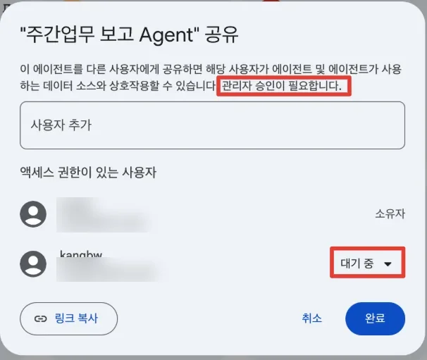
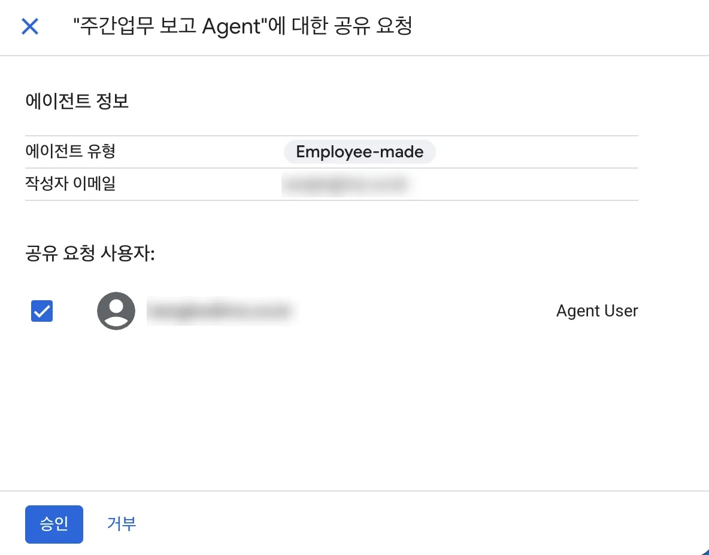
- 공유는 에이전트 화면 오른쪽 위 Share에서 이메일을 넣거나 그룹을 지정합니다. 최대 1,500명(그룹은 1명으로 셈)까지이고, 받은 사람은 읽기 전용이지만 실행하기, 자기 일정 만들기, 사본 만들기는 할 수 있습니다.
- 지식 파일은 공유받은 모든 사람에게 보입니다. 볼 권한이 없는 사람이 있으면 그 파일은 넣지 않습니다.
- 예약 실행: 매주 같은 질문을 자동으로 돌릴 수 있습니다. 예약용 로그인 정보는 14일마다 갱신해야 합니다.
- 자료 갱신: 지식 파일은 자동으로 바뀌지 않습니다. 분기마다 새 파일로 바꾸거나, 관리자가 연결한 데이터 소스를 쓰게 바꿉니다.
워크플로우 활용 심화
8.1As-Is 분해
자동화는 “지금 어떻게 하는지”를 단계로 쪼개는 데서 시작합니다. 단계마다 누가, 얼마나 걸리는지, 무엇을 보는지 적고, 자동화 방법을 고릅니다.
| 순서 | 지금 하는 일 | 누가 | 시간 | 자동화 |
|---|---|---|---|---|
| 1 | AS 시스템에서 지난주 접수 내역 엑셀 내려받기 | 담당자 | 10분 | 사전 준비: Power Automate 등으로 SharePoint 고정 폴더에 자동 저장 |
| 2 | 재발 건 필터, 현장별 집계 | 담당자 | 20분 | Gemini 단계 |
| 3 | 원인 추정과 조치 방향 작성 | 담당자 | 20분 | Gemini 단계 (지식: 매뉴얼) |
| 4 | 재발이 많으면 팀장 확인 후 본부 보고 | 담당자·팀장 | 10분 | 조건 + 사람 확인 |
| 5 | 메일 작성·발송 | 담당자 | 10분 | 메일 보내기 (외부 발송은 승인 필요) |
| 합계 | 70분 | 목표: 사람 확인 10분 |
8.2워크플로를 이루는 것
| 구성 | 종류 |
|---|---|
| 트리거 (언제 시작) | 수동(채팅에서 @워크플로이름), 예약(분·시간·일·주·월 단위 또는 cron, 시간대 지정), 앱 이벤트(Gmail·Outlook 메일, Drive·OneDrive·SharePoint 파일, Calendar, Teams, Jira, Confluence, ServiceNow). 앱 이벤트는 주기적으로 확인하는 방식이라 5~10분 늦을 수 있습니다. |
| Gemini 단계 | 지시문, 지식 파일, 연결 앱, 모델, 출력 형식(텍스트 또는 JSON) |
| 조건 | 앞 단계 결과에 따라 갈림길 |
| 정보 요청 | 사람에게 단답·날짜·예/아니오 등을 물어 받은 뒤 진행 |
| 앱 동작 | 데이터 찾기(읽기), 데이터 추가·수정(쓰기). 밖으로 나가는 쓰기(다른 사람에게 메일 등)는 사람 승인 필수, 나에게 보내는 메일·일정은 예외 |
앞 단계의 결과는 변수가 되어 뒤 단계에서 목록으로 고르거나 ${단계이름.output}처럼 씁니다. 한 플로에 노드는 100개까지입니다.
8.3입출력 명세와 예외 처리
| 구분 | 내용 |
|---|---|
| 트리거 | 시험: 수동 / 운영: 매주 월요일 08:30 (Asia/Seoul) |
| 입력 | AS 접수 이력 파일 (실습은 지식 파일, 운영은 SharePoint·Drive 고정 폴더) |
| 처리 1 | Gemini: 재발 현장 집계, 출력 JSON {"재발합계":n,"현장":[...]} |
| 처리 2 | Gemini: 상위 현장의 원인 추정과 조치 방향 (지식: 매뉴얼) |
| 분기 | 재발 합계 10건 이상이면 본부 보고 경로, 아니면 담당자에게만 |
| 출력 | 보고 메일 (실습은 본인에게) |
| 사람 확인 지점 | 본부 보고 메일 발송 전 승인 |
예외 처리
| 예외 | 감지 | 처리 |
|---|---|---|
| 입력 파일이 없거나 비어 있음 | Gemini ①이 “데이터 없음” 반환 | 조건으로 갈라 “파일 확인 필요” 메일을 나에게 |
| AI가 형식을 벗어난 답 | JSON 출력 지정 | 지시문에 출력 예시를 넣고, 실패 시 사람 확인 |
| 숫자가 평소와 크게 다름 | 재발 합계가 지난주의 2배 이상 | 정보 요청 단계로 담당자 확인 후 진행 |
- + New agent > Workflows > 직접 만들기(Build manually)를 고릅니다.
- 트리거를 수동으로 둡니다 (시험 후 예약으로 바꿈).
- Gemini 단계 ①: 지식에
02_AS접수이력을 넣고 아래 지시문, 출력은 JSON. - Gemini 단계 ②: 지식에
05_매뉴얼을 넣고 아래 지시문. 입력에 ①의 출력을 고릅니다. - 조건: ①의 재발합계가 10 이상인지.
- “예” 갈래: 메일 보내기(받는 사람 본인, 제목에 [본부 보고 검토]). “아니오” 갈래: 메일 보내기(본인).
- 채팅에서
@워크플로이름으로 실행해 메일이 오는지 확인합니다. - 예약 트리거로 바꿔 매주 월요일 08:30, 시간대 Asia/Seoul로 저장합니다.
지식 파일의 AS 접수 이력에서 30일내재발이 'Y'인 건을 현장별로 집계하라.
아래 JSON 형식으로만 답하라. 다른 설명은 쓰지 마라.
{"기준":"2026년 3분기 전체","재발합계":숫자,"현장":[{"현장명":"","지역":"","모델":"","설치연도":0,"재발":0}]}
현장은 재발이 많은 순서로 5곳까지. 자료가 없으면 {"재발합계":0,"현장":[],"오류":"데이터 없음"}.입력으로 받은 재발 현장 목록의 상위 3곳에 대해, 지식 파일인 유지관리 매뉴얼의 고장코드표와 재발 관리 기준을 근거로 '현장 / 원인 추정 / 다음 방문 점검 항목 / 리모델링 제안 대상 여부'를 표로 정리하라. 그 아래에 팀장 보고 메일 본문을 '현황 / 원인 추정 / 요청 사항' 3단락, 10줄 이내로 써라. 추정은 (추정)으로 표시하라.
8.4효과 측정
| 지표 | Before | After (목표) | 측정 |
|---|---|---|---|
| 1회 소요 시간 | 70분 | 사람 확인 10분 | 4주간 담당자 기록 |
| 보고 누락·지연 | 월 1~2회 (추정) | 0회 | 보고 메일 수신 시각 |
| 숫자 오류 | 측정 안 함 | 0건 | 월 1회 원본과 대조 |
MIT·Gartner 조사가 말하듯 성과는 “얼마나 썼나”보다 “업무가 얼마나 바뀌었나”로 봅니다. 4주 뒤 위 표를 채워 02 사내 사례 발표에 씁니다.
Antigravity 활용
9.1시작 조건
- Gemini Enterprise Standard·Plus에 AI 개발자 도구로 포함되어 있습니다(2026년 8월 정식 출시). 관리자가 AI developer tools를 켜야 합니다.
- Antigravity 앱 설치 후 로그인 화면에서 회사 계정(Business account) > Continue with Google Cloud를 고릅니다.
- Standard는 사용자당 월 $10 상당의 개발자 도구 크레딧이 포함됩니다.
- 고객 코드와 자료는 기본 모델 학습에 쓰이지 않습니다.
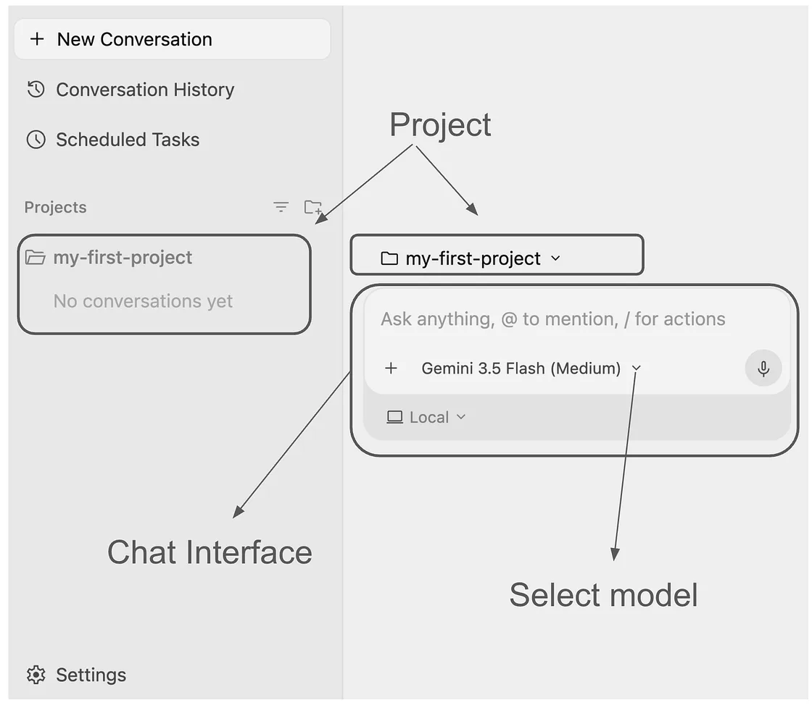
9.2일하는 방식: 말하기 → 계획 확인 → 실행 → 검토
- 말하기: 자료 위치, 만들 것, 결과 형태, 주의할 점을 적습니다 (05장 5요소 그대로).
- 계획 확인: Antigravity가 구현 계획(Implementation Plan)을 보여 줍니다. 읽고 고칠 점을 말합니다. 여기서 대부분의 실수가 걸러집니다.
- 실행: 승인하면 파일을 만들고 고칩니다. 사람 검토 모드에서는 중요한 동작마다 확인을 묻습니다.
- 검토: 결과 화면을 열어 숫자를 원본과 대조하고, 고칠 점을 이어서 말합니다.

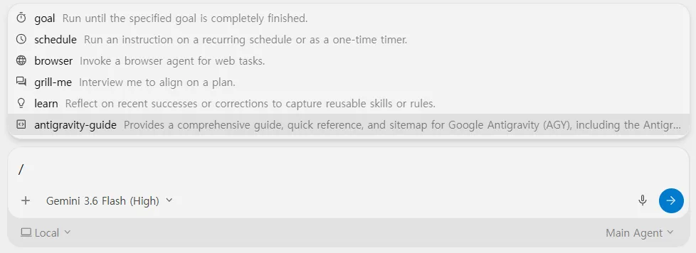
9.3데이터 활용 4가지
| 방식 | 흐름 | 언제 | 이 장에서 |
|---|---|---|---|
| ① 파일 업로드형 | 시스템에서 엑셀·CSV 내려받기 → 화면에서 파일 선택 → 브라우저 안에서만 분석·차트 | 가끔 보는 분석, 자료가 PC 밖으로 나가면 안 될 때 | 실습 1 |
| ② 예약 자동 갱신 | Power Automate 예약 실행 → SharePoint 고정 폴더에 저장 → 화면이 최신 파일을 자동 조회 | 매일·매주 같은 현황판 | 실습 2 |
| ③ 에이전트 결과 활용 | 사내 조회 에이전트(07장) 결과를 표로 받아 저장 → ①·② 방식으로 화면에 표시 | 여러 시스템을 묻는 일은 에이전트가, 보여 주기는 화면이 | 실습 1에 포함 |
| ④ Databricks 연동 | 정기 갱신 테이블 → (2027년) 포털에서 데이터 조회 → 갱신 주기를 고르면 화면에 자동 반영 | 전사 표준 데이터, 대량·정기 데이터 | 강사 시연 |
- Antigravity에서 새 프로젝트를 열고 작업 폴더로
10_Antigravity_실습을 고릅니다. - 아래 프롬프트를 넣고, 구현 계획이 나오면 “데이터를 외부로 보내지 않는다”가 들어 있는지 확인한 뒤 승인합니다.
- 만들어진
index.html을 브라우저로 열어, KPI 숫자를 CSV 합계와 대조합니다. - “평균 도착 30분 초과 지역은 빨간색으로”처럼 한 가지를 고쳐 달라고 이어서 말합니다.
이 폴더의 '일일AS현황_20261023.csv'와 '에이전트결과_재발현장_상위10.csv'로 서비스 현황 대시보드 한 페이지(index.html)를 만들어 줘. - 위: 오늘 접수, 처리 완료, 미처리, 승객 갇힘 4개 숫자 - 가운데: 지역별 접수(완료/미처리 구분) 막대, 지역별 평균 도착 시간 막대(30분 초과는 강조) - 아래: 재발 상위 현장 표, 리모델링 제안 대상은 표시 - 화면에서 다른 날짜 CSV를 골라 다시 그릴 수 있게 파일 선택 버튼도 넣어 줘 조건: 데이터는 브라우저 안에서만 처리하고 외부 서버로 보내지 마. 외부 라이브러리는 쓰지 마. 만들기 전에 구현 계획을 먼저 보여 줘.
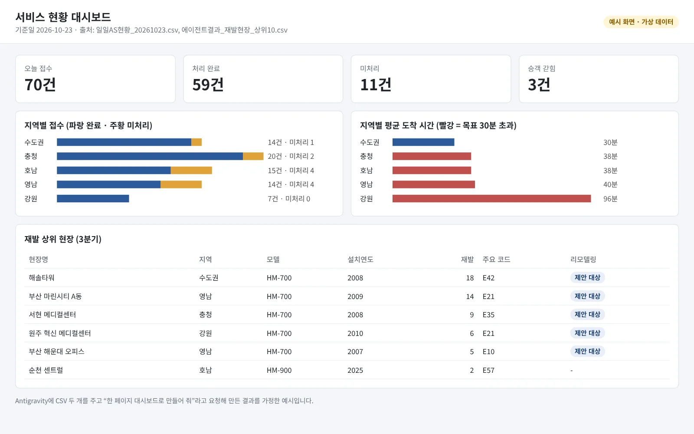
실제 운영에서는 Power Automate가 AS 시스템 파일을 매일 SharePoint 고정 폴더에 저장하고, 그 폴더를 PC와 동기화해 둡니다. 실습에서는 같은 폴더에 새 CSV를 넣는 것으로 대신합니다.
- 실습 1의 대시보드에 “폴더에서 가장 최근 날짜의 일일AS현황 파일을 자동으로 읽어 줘”를 추가 요청합니다.
/schedule로 예약 작업을 만듭니다: 이름 “AS 현황 갱신”, 매일 08:00, 프롬프트 “폴더의 최신 일일AS현황으로 대시보드를 갱신하고, 미처리 5건 이상 지역이 있으면 요약을 알려 줘”.
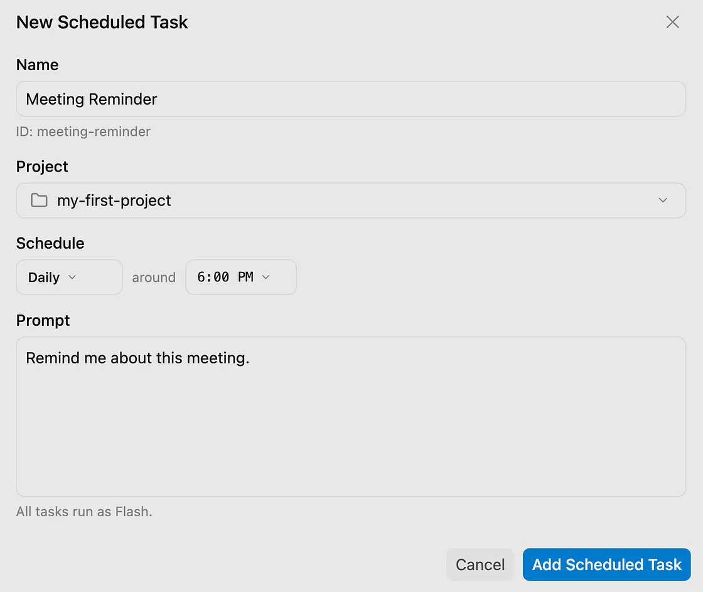
Antigravity에는 Databricks 전용 연결이 기본으로 들어 있지 않습니다(2026년 10월 기준, MCP 스토어 목록에 없음). 시연은 사전에 연결을 구성해 둔 환경에서 합니다.
| 단계 | 시연 내용 |
|---|---|
| 1. 연결 | Settings → Customizations → Installed MCP Servers → Add MCP에서 Databricks 쪽 MCP 서버를 등록 (사전 구성, 접속 권한은 조회 전용 계정) |
| 2. 조회 | “수주 집계 테이블에서 지역별 최근 4분기 달성률을 가져와 줘” → 실행할 SQL을 계획에 보여 주고 승인 후 조회 |
| 3. 화면 | 실습 1 대시보드의 데이터 출처를 CSV에서 테이블 조회로 바꿈 |
| 4. 갱신 주기 | 테이블 갱신 주기(예: 매일 06시)에 맞춰 예약 작업으로 다시 조회 |

2027년 사내 포털이 열리면 ④는 “포털에서 테이블과 갱신 주기를 고르면 화면에 자동 반영”되는 구조가 목표입니다. 그 전까지는 ①~③으로 시작하고, Databricks 연결 방식(관리형 MCP, BigQuery 페더레이션 등)은 IT 부서와 PoC로 정합니다.
9.4플랫폼 배포
| 배포 경로 | 방법 | 누가 |
|---|---|---|
| 팀 공유 | 완성한 HTML 파일과 CSV를 팀 SharePoint 폴더에 올려 함께 엶 | 본인 |
| 사내 플랫폼 게시 | 디지털기획팀이 정한 검토 절차(데이터 범위, 개인정보, 보안)를 거쳐 사내 포털에 게시 | 본인 + 디지털기획팀 |
| 상시 서비스 | 로그인, 24시간 갱신, 사내 시스템 직접 연동이 필요하면 Cloud Run 등에 배포 | IT·개발 (과정 2) |
9.5안전하게 시작하기
- 사람 검토 모드(Request Review)를 켜 두고, 샌드박스 설정을 유지한다
- 작업 폴더에는 이번 작업에 필요한 파일만 둔다 (바탕화면 전체를 열지 않음)
- MCP와 브라우저 사용은 회사 정책 범위 안에서만 켠다
- 구현 계획에서 외부 전송, 파일 삭제, 설치 명령이 있으면 이유를 묻고 승인한다
- 결과 화면의 숫자는 원본과 대조한 뒤 공유한다
- 잘된 방식은
/learn으로 규칙에 남겨 다음 작업에 재사용한다
참고: 터미널에서 쓰는 Antigravity CLI
개발자나 반복 작업 담당자는 터미널에서 agy 명령으로 같은 일을 시킬 수 있습니다. 일반 사용자 실습 범위는 아니며 과정 2에서 다룹니다.
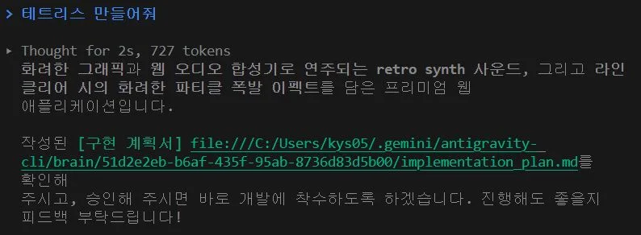
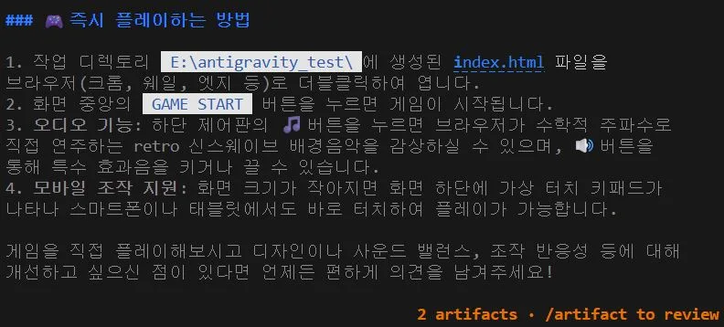
관리자 사전 설정, 용어, 참고 문서
교육 전 관리자 체크리스트
| 항목 | 위치 | 필요한 모듈 |
|---|---|---|
| 모델 선택기, Deep Research, 에이전트 갤러리·디자이너, NotebookLM, 세션 공유 | 관리자 콘솔 › 구성 › 기능 관리 | 03~08 |
| Canvas, 이미지·영상 생성, 웹 음성 입력(speech-to-text) | 관리자 콘솔 › 웹 앱 기능 | 03, 04 |
| Skills 사용과 공유 승인 정책 | 관리자 콘솔 | 05 |
| 에이전트 공유 승인 여부, 그룹 공유 | 관리자 콘솔 | 07, 08 |
| 모바일 앱 연결 링크 (Entra ID 사용자는 허용 목록 등록) | 관리자 콘솔 › 개요 | 03 |
| SharePoint·OneDrive·Outlook 커넥터 | 관리자 콘솔 › 데이터 저장소 | 03, 08 |
| AI developer tools (Antigravity) | 관리자 콘솔 (지역별 설정) | 09 |
| 교육용 계정 분리 (에이전트 생성 하루 1개 한도 때문) | - | 07, 08 |
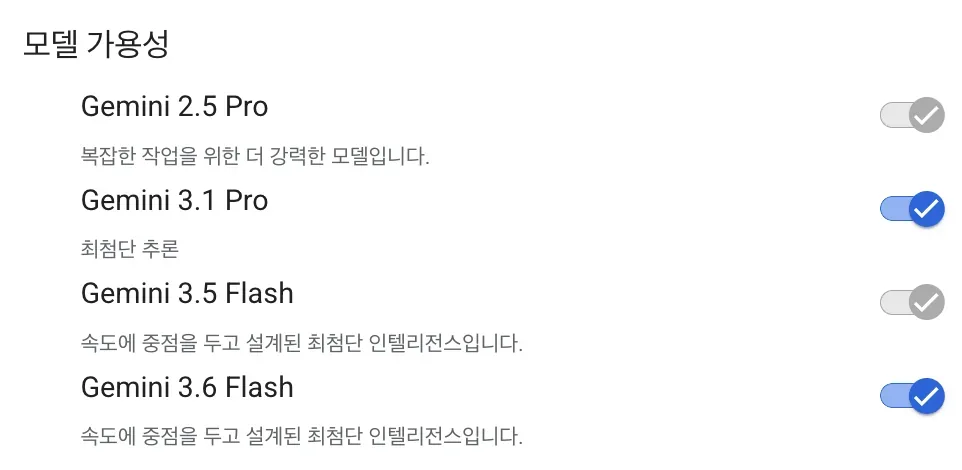
교육 당일 실제 테넌트에서 확인할 것
- 메뉴 라벨(한국어/영어)과 교재 표기가 같은지, 다르면 강사가 화면으로 보정
- 에이전트 지식 파일로 xlsx가 올라가는지 (안 되면 csv)
- 워크플로 메일 단계의 실제 발송 여부와 한글 제목 표시
- 계약 기준 하루 한도 (2026-08 과금 방식 변경 이후)
- Antigravity 보안 프리셋, MCP·브라우저 허용 범위, 예약 작업 동작
용어
| 용어 | 뜻 |
|---|---|
| 커넥터 | SharePoint, Drive, Outlook 같은 사내 시스템을 Gemini Enterprise에 연결하는 장치. 원래 문서 권한이 그대로 적용됨 |
| 스킬 | 반복 지시(목적·절차·출력 기준)를 저장해 이름으로 부르는 기능 |
| 채팅 에이전트 | 지시문과 지식 파일을 묶어 여러 사람이 같은 기준으로 묻는 도우미 |
| 워크플로 | 트리거로 시작해 정해진 단계를 차례로 실행하는 자동화 |
| Workflow Builder | 채팅 에이전트와 워크플로를 만드는 노코드 도구 (예전 이름 Agent Designer) |
| Gemini Notebook | 넣은 자료 안에서만 답하는 노트북 (예전 이름 NotebookLM Enterprise) |
| MCP | AI 도구가 외부 시스템(데이터베이스 등)을 쓰도록 연결하는 표준 방식 |
| Few-shot | 원하는 결과의 예시를 몇 개 보여 주고 같은 형식으로 쓰게 하는 기법 |
참고 문서
- Gemini Enterprise 공식 문서 · FAQ (데이터 학습·보안) · Gemini Enterprise 프롬프트 가이드
- Google Workspace 프롬프트 작성 가이드 (Persona·Task·Context·Format)
- Gemini Notebook Enterprise 개요
- Antigravity 엔터프라이즈 문서 · Antigravity 기업 고객 확대 발표 (2026-08-20)
- 사례 출처는 01장 각 카드의 링크를 참고하세요.
개정 이력
| 판 | 날짜 | 내용 |
|---|---|---|
| 1.0 | 2026-10-23 | 초판. 고객 커리큘럼 초안 기준 01~09장 |
| 2.0 | 2026-10-24 | 전면 개편. 3장 신설, 타사 제조·B2B 사례 14건, KIT 내려받기(PDF·DOCX·XLSX), 실습 데이터 새로 작성 |
| 2.1 | 2026-10-25 | 편집 디자인 개편(인쇄 교재 형식), 장·절 번호 체계 정리 |